08 de Noviembre
Acompañanos en nuestra celebración
Despues de tantas aventuras juntos decidimos estar juntos
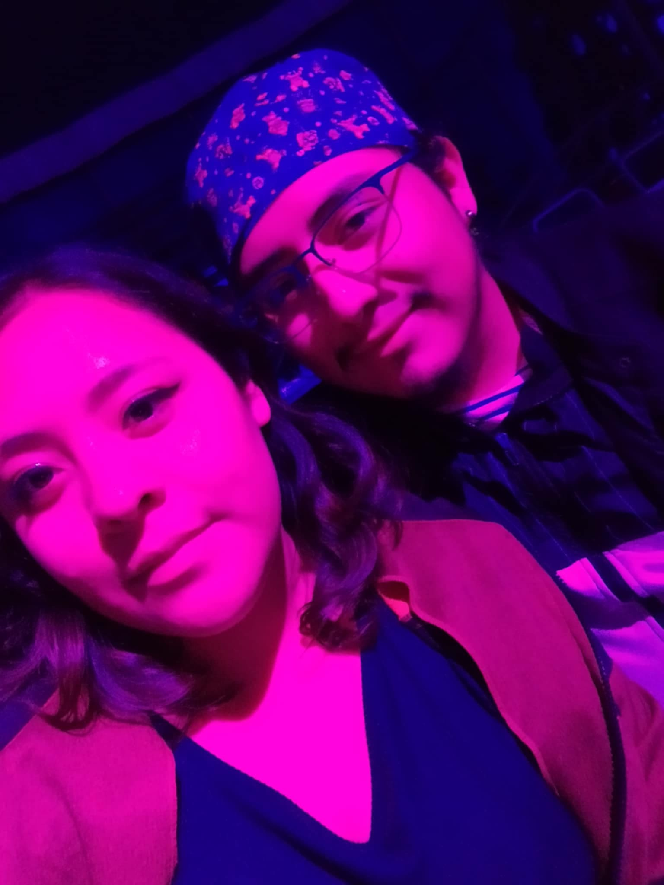
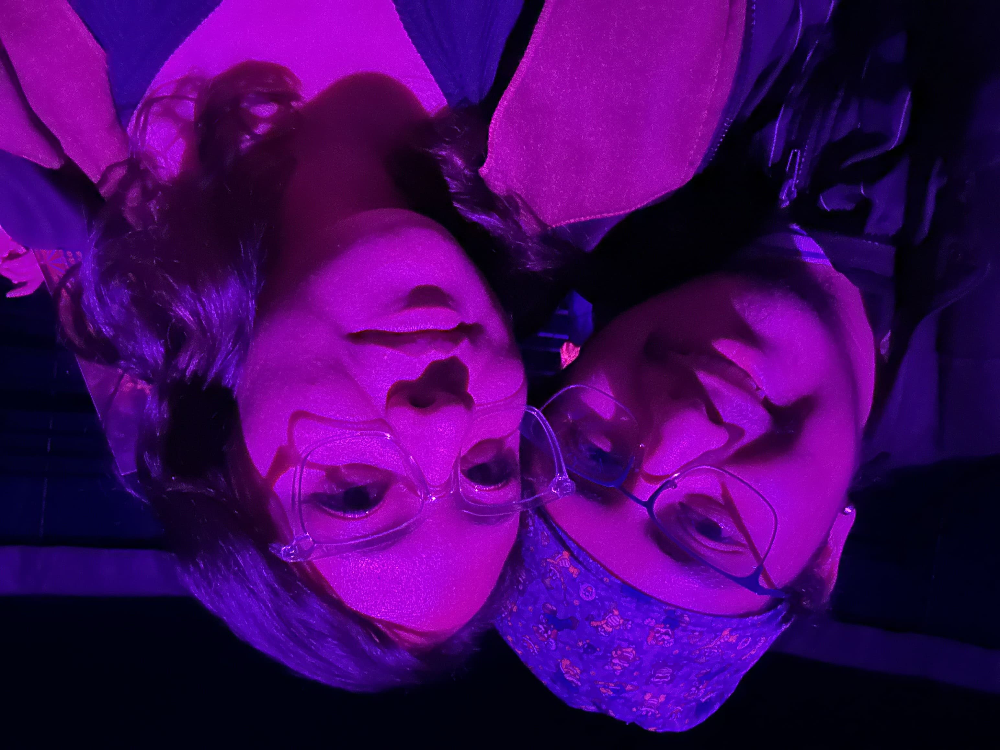
Estas Invitado
Acopañanos en nuestra celebracion
¡Te Esperamos!
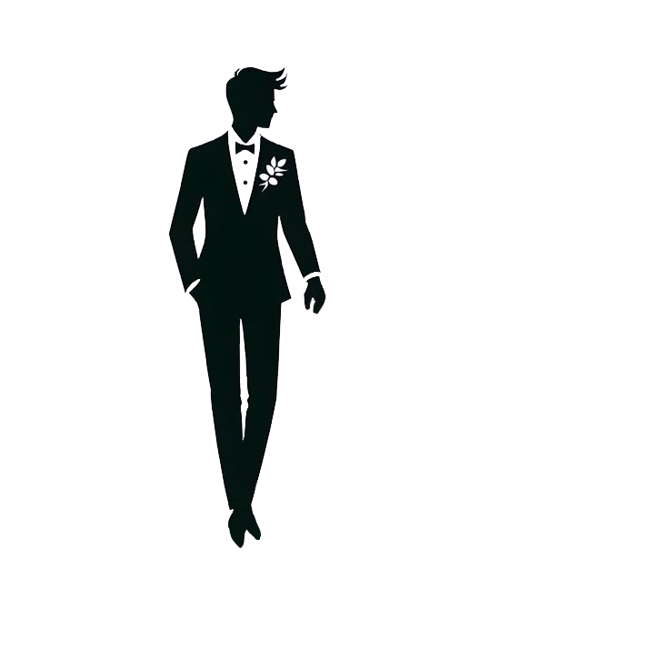
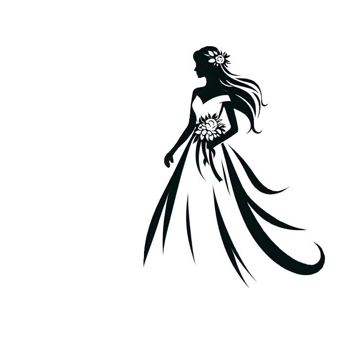
Ceremonia
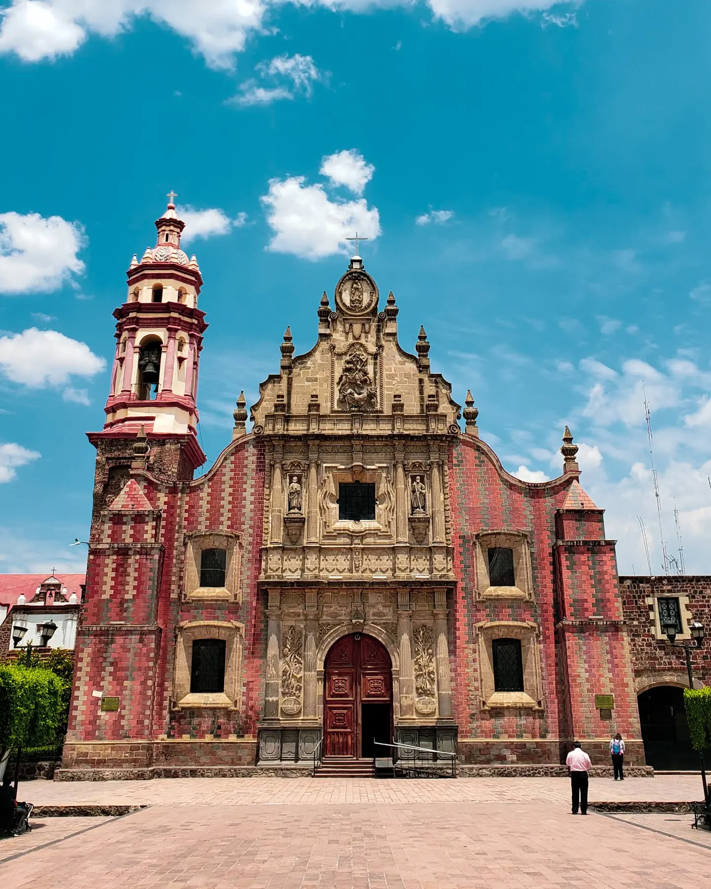Parroquia de Santiago Apostol de Chalco
Hora:
17:00 P.M.
Direccion:
C. Riva Palacio Manzana 016, Chalco Centro, 56600 Chalco de Díaz Covarrubias, Méx.
Celebracion
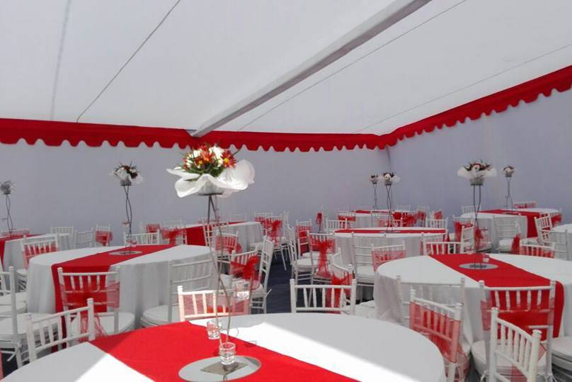Rubén Darío 52-58
Hora:
18:30 P.M.
Direccion:
Rubén Darío 52-58, Casco de San Juan, 56600 Chalco de Díaz Covarrubias, Méx.
Nuestos padrinos
Gracias por acompañarnos en este dia
-
Anillos
-
Lazo
-
Arras
-
Medallas
-
Biblia
-
Cojines
-
Ramo
-
Brindis
Mención especial
Velacion
Hombres
Mujeres
Nuestros Momentos Juntos
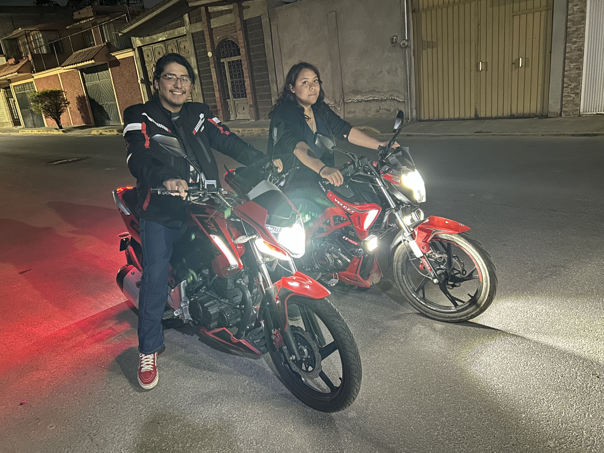
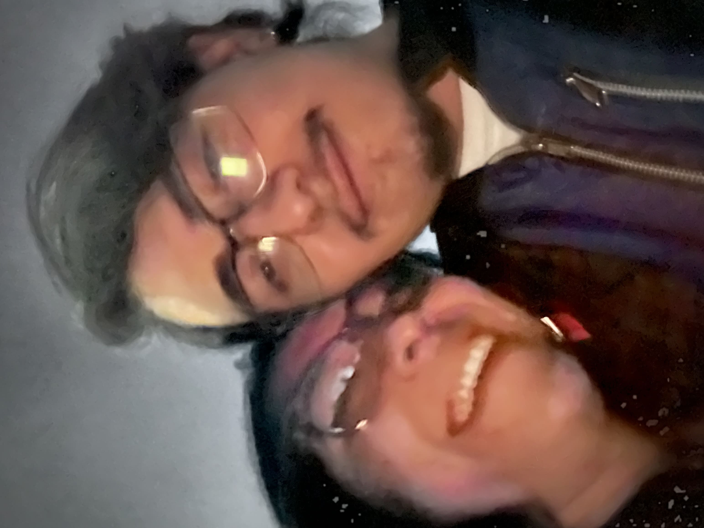

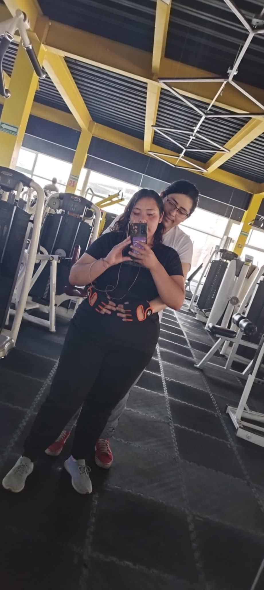
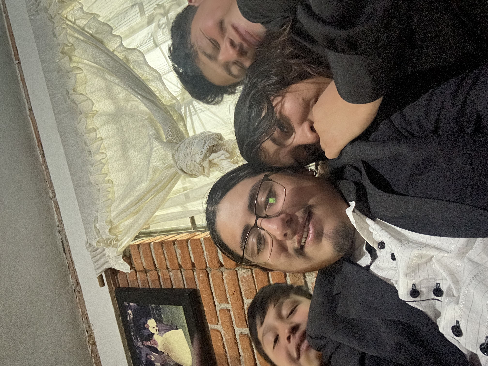
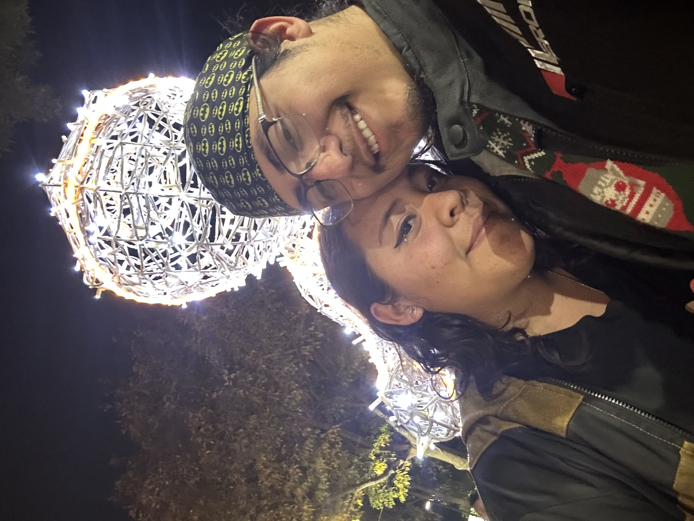
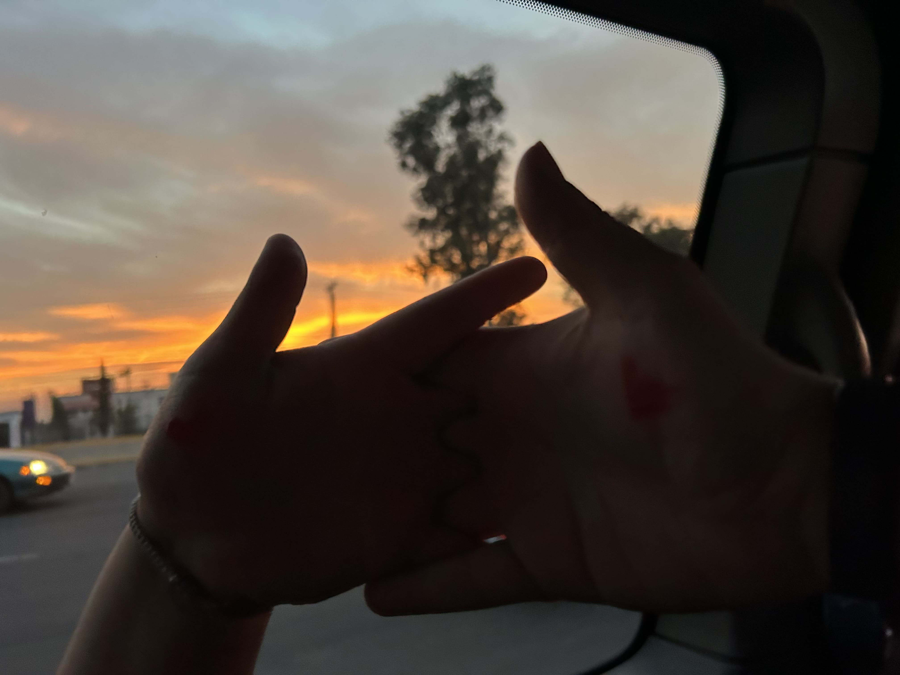
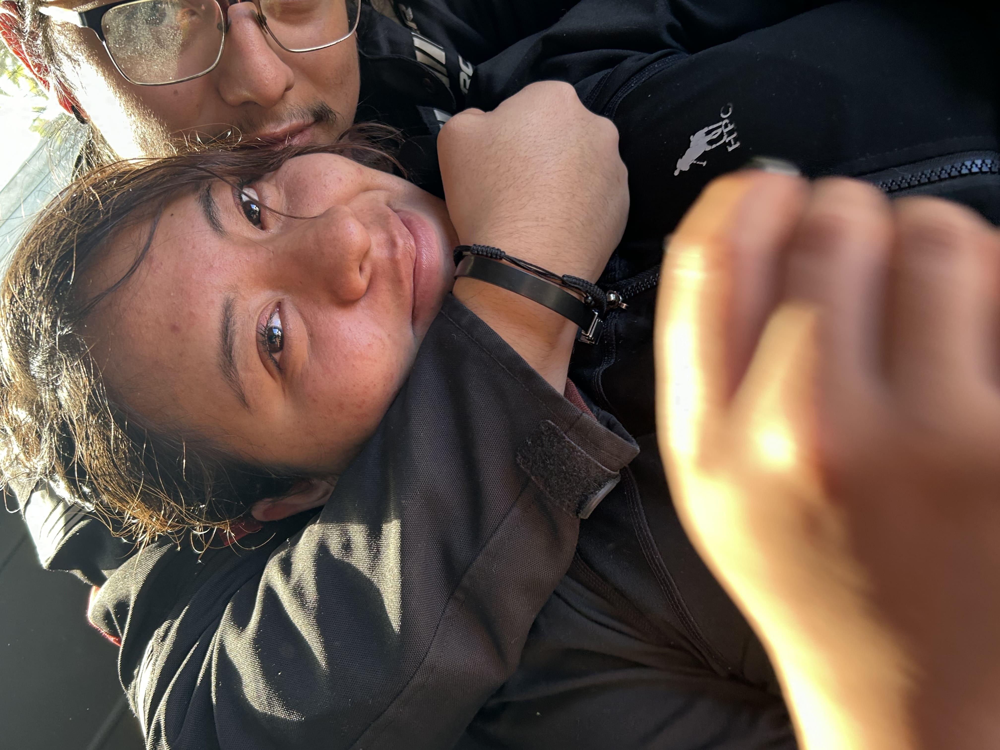